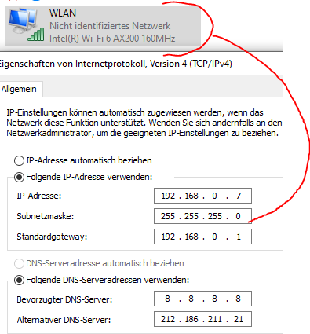

Hallo Magenteraner/innen,
ich wurde vor kurzem vom alten UPC 75mbit auf das neue Internet Fiber 150 umgestuft. Bisher hab ich meinen Stand-PC via PowerLine am LAN gehabt und bin eigentlich immer gut auf die Bandbreite gekommen. Seit der Umstellung hat sich die PowerLine Connection bei ~55mbit eingependelt (prinzipiell OK). Alle WLAN Geräte (Handys, Notebooks) sind easy mit der 5 GHz Frequenz verbunden und schöpfen die neue 150mbit Bandbreite voll ab. Damit ich das auch auf meine PC nutzen kann, hab ich mir vor kurzem den ASUS AX3000 Dual Band Wi-Fi 6 PCI-E Adapter gegönnt und eingebaut. Seltsamerweise schafft der es um die Burg NICHT sich mit 5 GHz zu verbinden (keine gültige IP) - 2.4 GHz aber kein Problem, da aber nur mit max. 33mbit unterwegs. Ich habe unter anderem folgendes erfolglos Versucht:
Erfolgreich getestet hab ich hingegen u.a.:
Ich komme hier irgendwie zu dem Schluss, dass meine Connect Box meinen Adapter nicht mag. Am Wi-Fi 6 und 802.11ax sollts nicht liegen, sonst könnt ich mich mit keinem anderen 5 GHz (Wi-Fi 5) verbinden.
Was kann ich hier noch tun zur Fehlerfindung/-behebung? Wäre enorm schade wenn ich auf meinem PC auf die volle Bandbreite verzichten müsste.
Vielen Dank und schönen Abend,
DaSto
Am 3.6.2021 um 22:02 schrieb Rexalius2000:
Was im speziellen soll ich ändern? Modus, Kanal, Kanalbreite? Wie gesagt, sogar mobilen Hotspot mit gleichen Settings (Kanal 44, Breite 40MHz) bekomm ich in einer Sekunde fehlerfrei verbunden. Nur die Connect Box eben nicht - da erhalte ich unter 5GHz keine gültige IP, daher auch kein Netzwerk und kein Internet.
Bei LAN oder 2.4GHz erhalte ich die "normale" 192.168.X.X IP zugewiesen, bei 5GHz erhalte ich plötzlich eine 169.254.X.X IP. Anscheinend unter 5 GHz der DNS nicht erreichbar und daher die Win IP erhalten? Ich checks nicht warum ich einfach nicht ins 5 GHz komme.......
Die 192.168.X.X IP-Adressen vergeben sich die Geräte selber z.B. wenn der DHCP Server (hier in der Connect Box eingebaut) nicht antwortet und keine statische IP-Adresse konfiguriert ist.
In dieser Asus PCIe Karte steckt ein Intel WiFi 6 Modul.
Ich konnte erst vor kurzem erst Erfahrungen mit einem Intel WiFi 6 Modul in Kombination mit der Connect Box machen.
Es gab bei diesem Setup auch Verbindungsprobleme. Diese konnten Großteils durch die Konfiguration einer statischen IP-Adresse am PC behoben werden.
In den Standardeinstellungen der Connect Box (siehe
Handbuch Seite 43 links
) belieben die Adressen beginnend mit 192.168.0.2 bis inkl. 192.168.0.9 frei.
Um eine Statische IP-Adresse unter Windows zu setzten, stelle zuerst eine Verbindung mit dem betreffenden W-Lan her. Dann gehe zu Einstellungen -> Netwerk und Internet -> Eigenschaften -> scrolle runter zu IP-Einstellungen -> Bearbeiten -> statt Automatisch (DHCP), Manuell auswählen -> IPv4 einschalten.
Bei IP-Adresse eine IP von 192.168.0.2 bis inkl. 192.168.0.9 eintragen.
Als Subnetzpräfixlänge 24 und als Gateway die Connect Box unter mit 192.168.0.1
Als DNS Kannst du entweder die Connect Box (192.168.0.1) eintragen oder einen alternativen, wie den Google DNS oder 1Dot von Cloudflare.
Versuche dies Mal und berichte, ob es damit funktioniert.
Bearbeitet von NTMvor 3 Stunden schrieb NTM:Die 192.168.X.X IP-Adressen vergeben sich die Geräte selber z.B. wenn der DHCP Server (hier in der Connect Box eingebaut) nicht antwortet und keine statische IP-Adresse konfiguriert ist.
In dieser Asus PCIe Karte steckt ein Intel WiFi 6 Modul.
....
Versuche dies Mal und berichte, ob es damit funktioniert.
Danke für deine genaue Analyse und deine Hinweise. Ich habs mit statischer IP bereits versucht, jetzt aber auch deine Anmerkungen einfließen lassen. Auch hier Ende ich leider immer im "Modus" mit dem "nicht identifizierbares Netzwerk".

Ich hab nun meinen Windows Event Log ein wenig durchforstet und bekomme bei 5 GHz Verbindungsversuchen immer die selben 3 Fehler:
Ich hab speziell nach dem 5007er gegoogelt und nun die Kanalbreite im PCI-E Modul statt auf "Auto" auf "20 MHz" eingestellt. Jetzt hab ich mal eine halbwegs stabile Verbindung zur 5 GHz Frequenz. Diese ist, selbst als einziges WLAN Gerät, aber aktuell mit max. 90mbit gedeckelt (statt 150mbit). Andere Kanalbreiten kann ich leider am PCI-E Modul nicht einstellen. Offene Frage bleibt - liegt das jetzt am PCI-E Modul oder an der Connect Box, dass nur diese statische Kanalbreite funktioniert? Lt. Connect Box gehen ja 3 verschiedene MHz Einstellungen.
Danke an Leser und Kommentare.